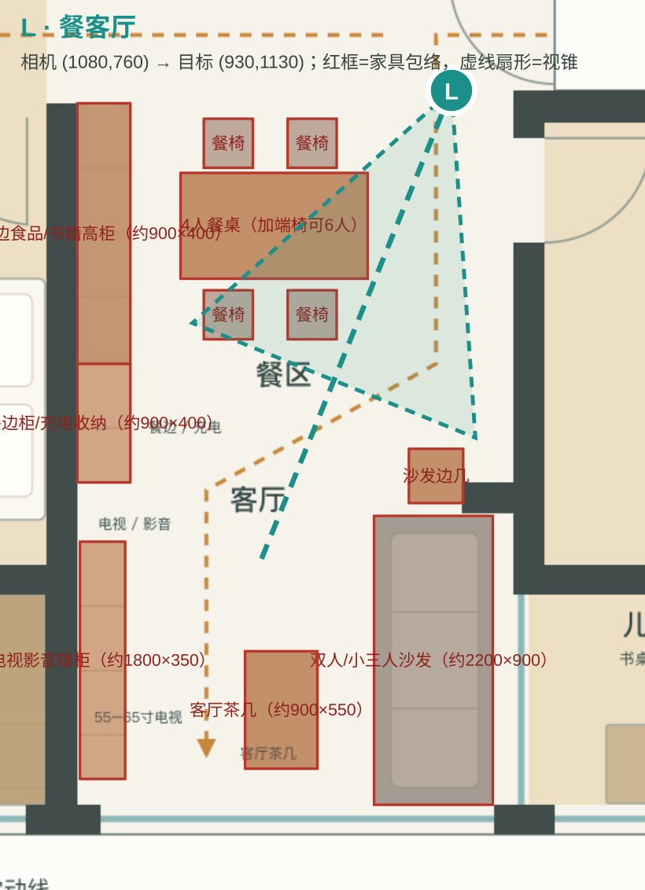
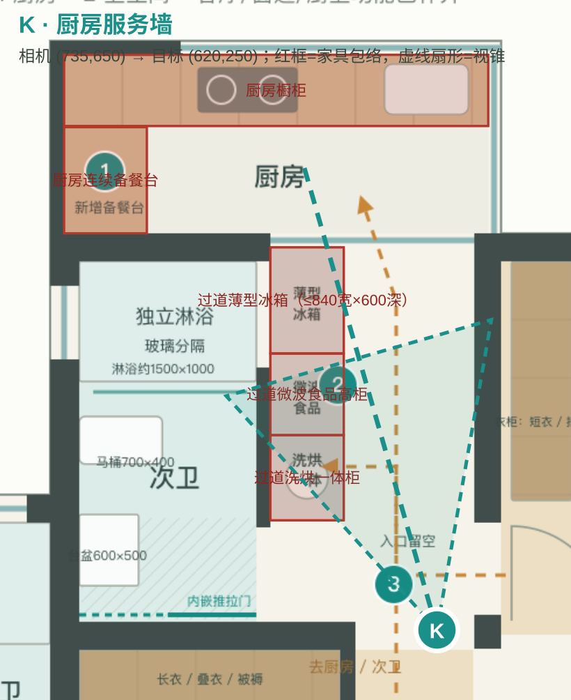
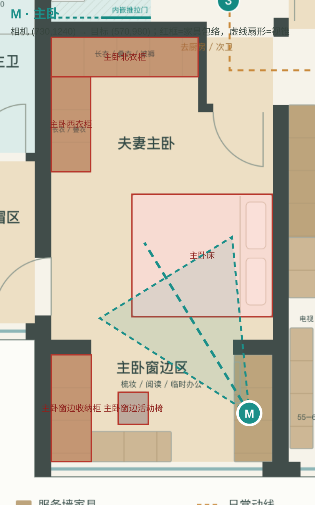
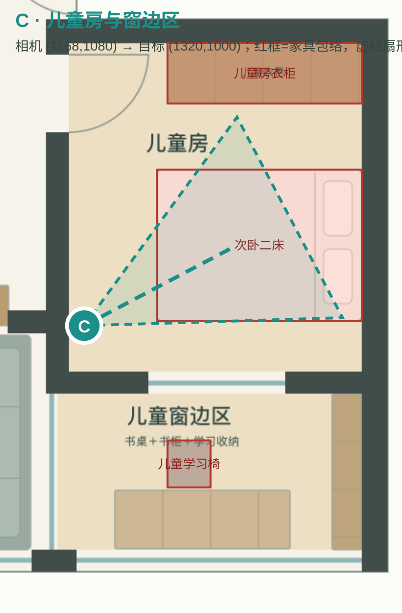
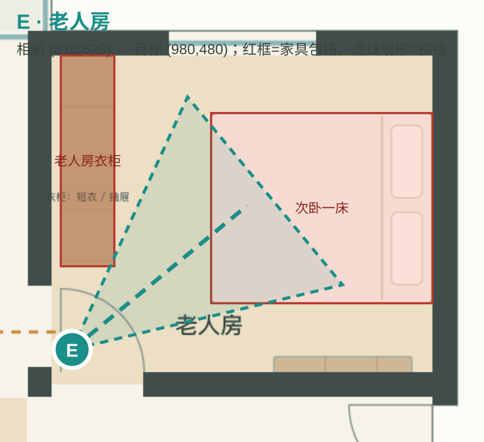
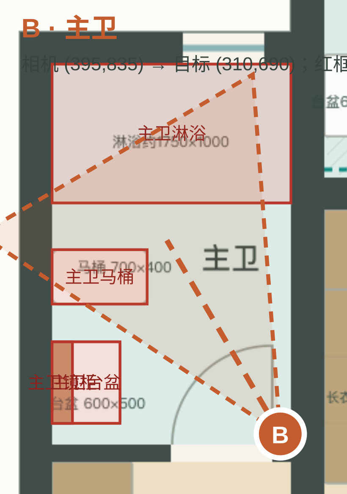
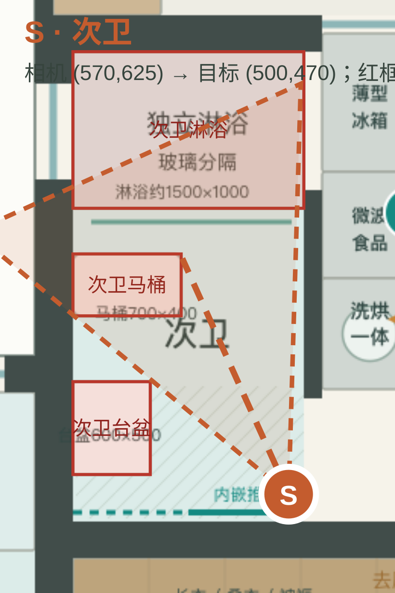

L · 餐客厅

只核对方向、门窗遮挡、家具比例和通行关系；不以此图修改布局。
K · 厨房服务墙

只核对方向、门窗遮挡、家具比例和通行关系；不以此图修改布局。
M · 主卧

只核对方向、门窗遮挡、家具比例和通行关系；不以此图修改布局。
C · 儿童房与窗边区

只核对方向、门窗遮挡、家具比例和通行关系；不以此图修改布局。
E · 老人房

只核对方向、门窗遮挡、家具比例和通行关系；不以此图修改布局。
B · 主卫

只核对方向、门窗遮挡、家具比例和通行关系；不以此图修改布局。
S · 次卫

只核对方向、门窗遮挡、家具比例和通行关系；不以此图修改布局。